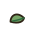
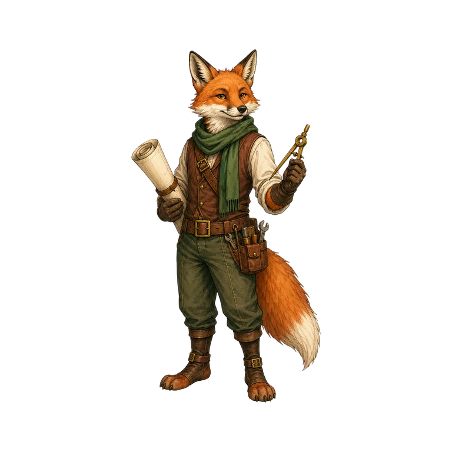

Scholar's Hollow
Research Report Workbench

10:42 AM
May 18, 2025 · 18°C
Village Infrastructure · Verified Field Draft
III. Infrastructure Overview
A. Roads & Bridges

The road network of Orchard Vale is the lifeline of our rural economy, connecting farms, forges, and markets across a diverse landscape. Over the past decade, steady investments in maintenance and bridge restoration have improved reliability, though seasonal wear and funding gaps remain persistent challenges.
Field inspections completed in Spring 2025 confirm that timber-and-stone crossings along the North Road carry 62% of peak harvest freight. Targeted drainage upgrades completed since 2022 have cut spring washout delays nearly in half.
Bridges remain the costliest assets to maintain, yet their failure risk has decreased notably since the 2020 flood season. Preventative upkeep proves far less costly than emergency reconstruction.1,2
Editorial Desk Note: Click anywhere in the report prose above to edit directly, highlight passages, or insert citations. Word count updates in real time.
Maintenance Costs (Gold)
| Category | 2022 | 2023 | 2024 | 2025* |
|---|---|---|---|---|
| Roads | 2,450 | 2,615 | 2,710 | 2,980 |
| Bridges | 1,820 | 2,140 | 1,965 | 2,280 |
| Total | 4,270 | 4,755 | 4,675 | 5,260 |